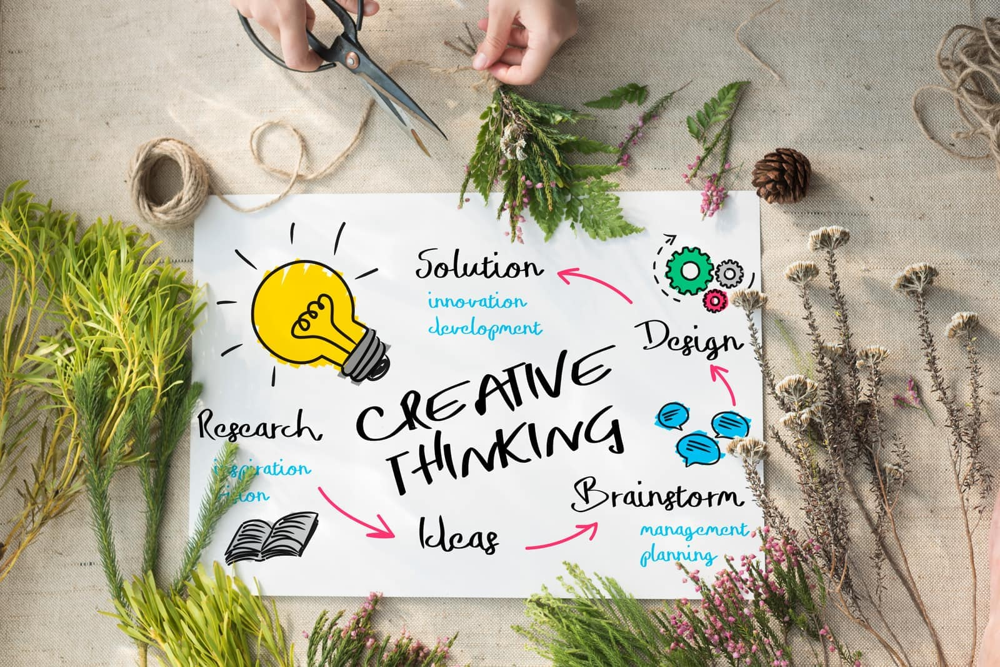

Doğanın İlhamıyla Yaratıcı Düşünme Eğitimi
Doğa İsraf Etmez, Sadece Dönüştürür
Açılış Sahnesi
Bir proje başarısız olur. Toplantıda kimse konuşmak istemez, çünkü “başarısızlık” kelimesi odada bir suçluluk havası yaratır. Oysa doğada “hata” diye bir şey yoktur — düşen bir yaprak toprağa geri döner ve bir sonraki filizin besinine dönüşür.
Doğadan Öğrendiğimiz Ders
Biyomimikri, doğanın milyonlarca yıllık Ar-Ge’sinden ilham alır: doğa asla israf etmez, her “atık” bir sonraki adımın yakıtıdır. Bu eğitim, katılımcılara başarısızlığı bir engel değil, bir sonraki doğru adımın gübresi olarak görmeyi öğretir.
İş Hayatına Yansıması
Ekipler risk almaktan çekinmez; deneme-yanılma bir utanç kaynağı değil doğal bir süreç hâline gelir ve inovasyon hızlanır.
Dolaylı Sosyal Hayata Yansıması
Kişi kendi hayatındaki “başarısızlıkları” da daha az yargılayıcı bir gözle görmeye başlar — bu, özgüveni ve genel yaşam doyumunu olumlu etkiler.
Bu Eğitimle Güçlenen Kaslar
- Cesaret Kası
- yeni ve alışılmadık fikirleri söyleyebilme
- Yeniden Çerçeveleme Kası
- hatayı “veri”ye, atığı kaynağa dönüştürme
- Yalınlık Kası
- kısıtlı kaynakla maksimum çözüm üretme
- Uyum Kası
- değişen koşullara hızla yön değiştirme
Program Bilgileri
- Format
- Yüz Yüze / Online
- Süre
- 1-2 Gün
- Hedef Kitle
- İnovasyon/Ar-Ge ekipleri, tüm yaratıcı süreçlerde yer alan çalışanlar
- Hedef Yetkinlikler
- Tasarım Odaklı Düşünme · Yaratıcılık · Değişim Yönetimi